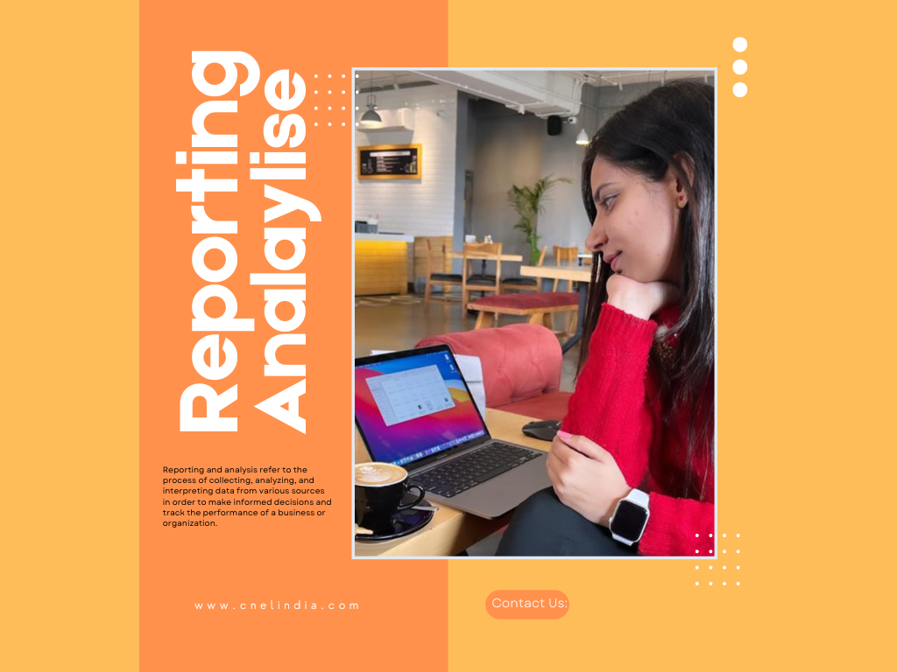

Programmers at CnEL can help you build complex reporting systems, this is how:
Reporting involves compiling and presenting the data in a clear and concise format, such as a report or dashboard. This allows stakeholders to quickly understand the key metrics and performance indicators related to their business or organization.
Analysis is the process of interpreting the data and identifying trends, patterns, and insights that can inform decision-making. This can include identifying areas of improvement, identifying opportunities for growth, or identifying potential issues.
Together, reporting and analysis provide valuable insights into a business or organization's performance, allowing stakeholders to make data-driven decisions and track progress over time.
Why do you need Reporting & Analysis services?:
Reporting and analysis services are necessary for several reasons:
1.To make informed decisions: Reporting and analysis provide valuable insights into a business or organization's performance, allowing stakeholders to make data-driven decisions.
2.To track progress: Reporting and analysis can help to track progress over time and identify areas of improvement, allowing for adjustments to be made to a strategy or operations to achieve better results.
3.To identify opportunities for growth: By identifying trends, patterns, and insights in the data, analysis can help to identify opportunities for growth and expansion.
4.To identify potential issues: Reporting and analysis can also help to identify potential issues or problems, allowing businesses to proactively address them before they become major problems.
5.To measure the effectiveness of marketing campaigns: By analyzing the data from marketing campaigns, businesses can determine which strategies are working and which are not, allowing them to optimize their campaigns for better results.
6.To track customer behavior and preferences: Analysis of customer data can provide insights into customer behavior and preferences, which can inform product development, marketing, and customer service strategies.
7.To comply with regulations: Some businesses are required to report and analyze data for compliance purposes, such as financial institutions and healthcare providers.
8.To communicate performance to stakeholders: Reporting and analysis can be used to communicate the performance of a business or organization to stakeholders, such as investors, shareholders, and board members.
How small business can grow by using Reporting & Analysis Services:
Small businesses can grow by using reporting and analysis services in several ways:
1.Identifying areas of improvement: By analyzing data and identifying areas where performance can be improved, small businesses can make informed decisions to optimize their operations and achieve better results.
2.Identifying opportunities for growth: Analysis of data can help small businesses identify new market opportunities, customer needs, and ways to expand their product or service offering.
3.Measuring marketing effectiveness: By analyzing the data from marketing campaigns, small businesses can determine which strategies are working and which are not, allowing them to optimize their campaigns for better results and increase their ROI.
4.Identifying customer needs and preferences: Analysis of customer data can provide insights into customer behavior and preferences, which can inform product development, marketing, and customer service strategies.
5.Improving customer satisfaction: By using customer feedback and data, small businesses can identify and address customer pain points, leading to improved customer satisfaction and loyalty.
6.Benchmarking performance: By comparing their performance to industry standards and competitors, small businesses can benchmark their performance and identify areas for improvement.
7.Making data-driven decisions: By having access to accurate and up-to-date data, small businesses can make more informed decisions, rather than relying on intuition or guesswork.
8.Communicating performance to stakeholders: Reporting and analysis can be used to communicate the performance of a small business to stakeholders, such as investors, shareholders, and board members. This can help to demonstrate the business's strengths and progress, which can be useful in securing additional funding or investment.